Arduino Application
1.Layout

The Arduino UNO
Looking at the board from the top down, this is an outline of what you will see (parts of the board you might interact with in the course of normal use are highlighted):
- Analog Reference pin (orange)
- Digital Pins 2-13 (green)
- Digital Pins 0-1/Serial In/Out - TX/RX (dark green) - These pins cannot be used for digital i/o (digitalRead and digitalWrite) if you are also using serial communication (e.g. Serial.begin).
- Reset Button - S1 (dark blue)
- In-circuit Serial Programmer (blue-green)
- Analog In Pins 0-5 (light blue)
- Power and Ground Pins (power: orange, grounds: light orange)
2.Software
- External Power Supply In (9-12VDC) - X1 (pink)
- Toggles External Power and USB Power (place jumper on two pins closest to desired supply) - SV1 (purple)
- USB (used for uploading sketches to the board and for serial communication between the board and the computer; can be used to power the board) (yellow)
- S4A
- Mblock
- BlockyDuino
- motoduino/motoblockly
- Webduino Blockly
- Visual Studio Code extension for Arduino
In the meantime we can use developers' software as following:
3.Hardware

3.1 Arduino Uno Rev3
3.2 Arduino Uno Rev3
3.3 Arduino Uno Rev3

3.4 Arduino Uno Rev3
3.5 Arduino Uno Rev3

3.6 Arduino Uno Rev3
3.7 Arduino Uno Rev3

3.8 Arduino Uno Rev3
4.Component

4.1 breadboard
About Arduino
Arduino is an open-source electronics platform based on easy-to-use hardware and software. Arduino boards are able to read inputs - light on a sensor, a finger on a button, or a Twitter message - and turn it into an output - activating a motor, turning on an LED, publishing something online. You can tell your board what to do by sending a set of instructions to the microcontroller on the board. To do so you use the Arduino programming language (based on Wiring), and the Arduino Software (IDE), based on Processing. Over the years Arduino has been the brain of thousands of projects, from everyday objects to complex scientific instruments. A worldwide community of makers - students, hobbyists, artists, programmers, and professionals - has gathered around this open-source platform, their contributions have added up to an incredible amount of accessible knowledge that can be of great help to novices and experts alike. Arduino was born at the Ivrea Interaction Design Institute as an easy tool for fast prototyping, aimed at students without a background in electronics and programming. As soon as it reached a wider community, the Arduino board started changing to adapt to new needs and challenges, differentiating its offer from simple 8-bit boards to products for IoT applications, wearable, 3D printing, and embedded environments.
Why Arduino?
Thanks to its simple and accessible user experience, Arduino has been used in thousands of different projects and applications. The Arduino software is easy-to-use for beginners, yet flexible enough for advanced users. It runs on Mac, Windows, and Linux. Teachers and students use it to build low cost scientific instruments, to prove chemistry and physics principles, or to get started with programming and robotics. Designers and architects build interactive prototypes, musicians and artists use it for installations and to experiment with new musical instruments. Makers, of course, use it to build many of the projects exhibited at the Maker Faire, for example. Arduino is a key tool to learn new things. Anyone - children, hobbyists, artists, programmers - can start tinkering just following the step by step instructions of a kit, or sharing ideas online with other members of the Arduino community.
There are many other microcontrollers and microcontroller platforms available for physical computing. Parallax Basic Stamp, Netmedia's BX-24, Phidgets, MIT's Handyboard, and many others offer similar functionality. All of these tools take the messy details of microcontroller programming and wrap it up in an easy-to-use package. Arduino also simplifies the process of working with microcontrollers, but it offers some advantage for teachers, students, and interested amateurs over other systems:
- Inexpensive - Arduino boards are relatively inexpensive compared to other microcontroller platforms. The least expensive version of the Arduino module can be assembled by hand, and even the pre-assembled Arduino modules cost less than \$50
- Cross-platform - The Arduino Software (IDE) runs on Windows, Macintosh OSX, and Linux operating systems. Most microcontroller systems are limited to Windows.
- Simple, clear programming environment - The Arduino Software (IDE) is easy-to-use for beginners, yet flexible enough for advanced users to take advantage of as well. For teachers, it's conveniently based on the Processing programming environment, so students learning to program in that environment will be familiar with how the Arduino IDE works.
- Open source and extensible software - The Arduino software is published as open source tools, available for extension by experienced programmers. The language can be expanded through C++ libraries, and people wanting to understand the technical details can make the leap from Arduino to the AVR C programming language on which it's based. Similarly, you can add AVR-C code directly into your Arduino programs if you want to.
- Open source and extensible hardware - The plans of the Arduino boards are published under a Creative Commons license, so experienced circuit designers can make their own version of the module, extending it and improving it. Even relatively inexperienced users can build the breadboard version of the module in order to understand how it works and save money.
Arduino Simulation
Tinkercad
Tinkercad is a user-friendly, web-based 3D design and modeling tool. It's suitable for beginners and educators, allowing users to create 3D models by dragging and dropping shapes. Tinkercad is often used for educational purposes to introduce concepts of 3D design and printing.
Tinkercad's Circuit design feature enables users to create and simulate electronic circuits in a virtual environment. Here's a more in-depth overview:
1.Components: Tinkercad offers a wide range of electronic components that you can use in your circuit designs. These include resistors, capacitors, inductors, diodes, transistors, integrated circuits, microcontrollers (like Arduino), sensors, and more.
1.Components: Tinkercad offers a wide range of electronic components that you can use in your circuit designs. These include resistors, capacitors, inductors, diodes, transistors, integrated circuits, microcontrollers (like Arduino), sensors, and more.
2.Breadboard: The virtual breadboard is the workspace where you place and connect electronic components. It resembles a real-world breadboard used for prototyping circuits. You can drag and drop components onto the breadboard and connect them by placing virtual wires.
3.Wiring: Tinkercad allows you to connect components using virtual wires. You click on a component's connection point, drag the wire to another connection point, and release to establish a connection. This mimics the physical process of wiring a circuit on a real breadboard.
4.Simulation: One of the key features is the simulation capability. Tinkercad lets you simulate your circuit to observe how it behaves. This includes applying voltage, adjusting resistor values, or interacting with components like LEDs and motors. The simulation helps users troubleshoot and refine their designs before implementing them in the physical world.
5.Code Blocks: For circuits involving microcontrollers like Arduino, Tinkercad allows you to program these microcontrollers using a drag-and-drop block-based coding interface. This feature is beneficial for users learning programming and electronics simultaneously.
6.Projects and Sharing:** Tinkercad provides a platform for users to create and share their circuit designs. You can explore a variety of circuits created by the community and even remix them for your own projects. This sharing aspect fosters a collaborative and educational environment.

7.Integration with 3D Design: Tinkercad's circuit design module can be integrated with its 3D design module. This means you can seamlessly combine your electronic circuit designs with 3D models, allowing for the creation of projects that integrate both electronic and mechanical components.
Overall, Tinkercad's Circuit design is a versatile and user-friendly tool suitable for both beginners learning about electronics and more advanced users prototyping and experimenting with circuit designs.
Arduino Input
In the context of Arduino, inputs are signals or data received by the Arduino board from external sources. Arduino boards are equipped with various input options, and these inputs allow the board to interact with the surrounding environment. Here are some common types of inputs in Arduino:
1.Digital Inputs:
-Digital Pins: Arduino has digital input pins that can read binary signals, either HIGH (voltage present) or LOW (no voltage).
-Buttons and Switches: Digital pins are commonly used to connect buttons or switches. The Arduino can detect whether the button is pressed (HIGH) or not pressed (LOW).
2.Analog Inputs:
- Analog Pins: Arduino boards typically have analog input pins that can read varying voltage levels. This is useful for interfacing with sensors that provide analog signals.
-Potentiometers and Sensors: Analog inputs are commonly used with devices like potentiometers (variable resistors) or various sensors (e.g., light sensors, temperature sensors) that produce analog signals proportional to the measured quantity.
3.Serial Communication:
- Serial Input:** Arduino can receive data through serial communication from other devices, such as a computer, another Arduino, or sensors with serial output.
4. I2C and SPI Communication:
- I2C and SPI Inputs:Arduino boards can communicate with other devices using I2C or SPI protocols. These are used for connecting with external sensors, displays, or other microcontrollers.
5. Interrupts:
- Interrupt Inputs: Arduino supports interrupts, allowing the board to respond quickly to external events. For example, an interrupt can be triggered by a change in a digital input, providing a way for
the Arduino to react immediately.
6. Wireless Communication:
- Wireless Inputs: Using modules like Wi-Fi or Bluetooth, Arduino can receive data wirelessly from other devices or sensors.
Understanding how to use these input options allows Arduino projects to interact with the environment, respond to user input, and gather data from various sensors. The specific input method chosen depends on the requirements of the project and the type of information the Arduino needs to receive.
Arduino Output
Arduino outputs refer to signals or actions generated by the Arduino board to interact with the external world. Here are common types of outputs in Arduino:
1.Digital Outputs:
- Digital Pins:Arduino has digital output pins that can be set to HIGH (outputting voltage) or LOW (no output voltage). These pins are often used to control LEDs, relays, or other digital devices.
- LEDs: Digital output pins are frequently used to drive LEDs, indicating the status of the Arduino or providing feedback in projects.

2.Analog Outputs:
- PWM (Pulse Width Modulation): Some digital pins on Arduino boards support PWM. PWM is a technique to simulate analog output by rapidly switching a pin between HIGH and LOW. This is often used for
controlling the brightness of LEDs or the speed of motors.
- DAC (Digital-to-Analog Converter): In some advanced Arduino boards, there are dedicated pins that provide true analog output voltages. This can be useful for applications that require smooth and continuous voltage
levels.

3.Serial Communication:
- Serial Output: Arduino can send data through serial communication to other devices, such as a computer or another Arduino. This is useful for debugging, data logging, or controlling external
systems.
4.I2C and SPI Communication:
- I2C and SPI Outputs: Arduino boards can communicate with other devices using I2C or SPI protocols, serving as both input and output. This is common when interfacing with external sensors,
displays, or other microcontrollers.
5. Motor Control:
- Motor Outputs: Arduino can control motors using dedicated motor driver shields or modules. By varying the voltage or pulse signals, the Arduino can regulate the speed and direction of motors.
6.Sound Output:
- Buzzer or Speaker: Arduino can generate tones or play simple melodies through a connected buzzer or speaker. This is often used in projects where audio feedback is required.
7.Display Output:
- LED Displays, LCDs, and OLEDs: Arduino can control various types of displays to provide visual information. This includes alphanumeric LCDs, graphical OLED displays, and LED matrix displays.
Understanding how to use these output options allows Arduino projects to control and influence the external environment. The specific output method chosen depends on the project's requirements and the desired interaction with the connected devices or systems.
Practice
Distance Measuring using Ultrasonic Sensor
Components:
- Arduino Uno R3
- LCD 16 x 2
- Ultrasonic Distance Sensor
- 220 Ω Resistor
- 250 Ω Potentiometer
.png)
Image 1: From the search bar, choose Arduino, breadboard, LCD, ultrasonic, and potentiometer.
.png)
Image 2: First, attach GND and VCC (positive and negative sites) of Arduino to the breadboard ( Negative Site ). Attach the LCD now, and adjust the value of resistance 330 whom by connecting the resistance LCD cathode, GND to the Bread Boad GND Negative terminal, and VCC pin to the Breadboad VCC Positive terminal. Then connect to GND, as well as the potentiometer to VCC, the second terminal to GND, and the middle pin to the LCD's V0 pin. Connect the RW pin to GND (negative), the E pin to the Arduino's 9th pin, the DB4 pin to the eighth pin, the DB5 pin to the 7th, the DB6 pin to the 6th, and the final pin, DB7, to the 5th pin of the Arduino. LCD Pin 5 is finished.
.png)
Image 3: Select LCD
.png)
Image 4: search the Ultrasonic distance
.png)
Image 5: take Potentiometer from search bar and also take one Resistance
.png)
Image 6: Now open the code option and select the “text” option and write down on your code and Launch the simulation now
.png)
Image 7:observe that the potentiometer's LCD is printing on the display
.png)
Image 8: When the optical distance from the ultrasonic sensor is great, the value is decreasing, and when the optical distance from the ultrasonic censor is close, the value is increasing

Image 10: Project Implementation
Open Source Project
Topic : Light Seeking Mobile Robot - BASYS 3 (VHDL)
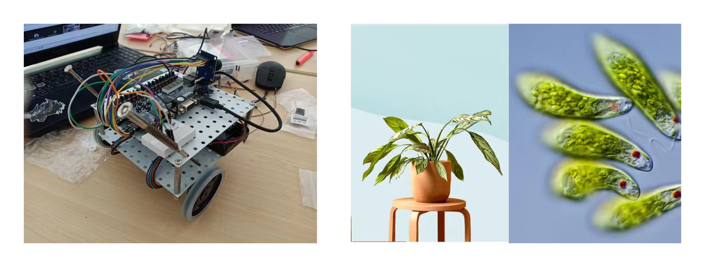Light Seeking Mobile Robot, the main point of this project is light seeking. Most of organisms needs light in order to survive, but the amount needed varies. The behavior of organisms that need light and is often known is plants and Euglena where both organisms need light for photosynthesis (survive). Even Euglena has the ability to seeking for light sources. Through this concept, humans can take advantage of it in many ways in life or biomimicry.
Camera-Guided Light Seeking Mobile Robot
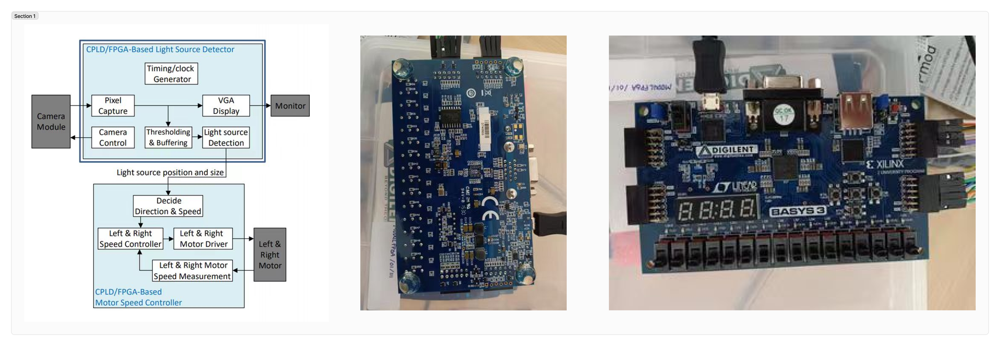In this project, BASE 2023 LC-71 will be divided into 5 divisions with different roles to maximize work and achieve goals which is recognize light source and move toward the light. Light Seeking Mobile Robot aims to find the point of the light source detected by the OV7670 camera. All functions in the form of VHDL code will be input on Basys 3 board to do the image processing and motor control.
Getting Ready

Before learning more about Light Seeking Mobile Robot you can click the linked page below to learn how to install "Vivado" (the app that used to program BASYS 3 with VHDL code).
How to Get Started With Vivado HLs 2015.4
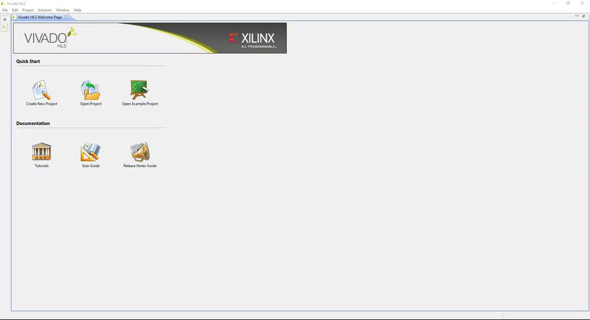Step 1: How to Create Project
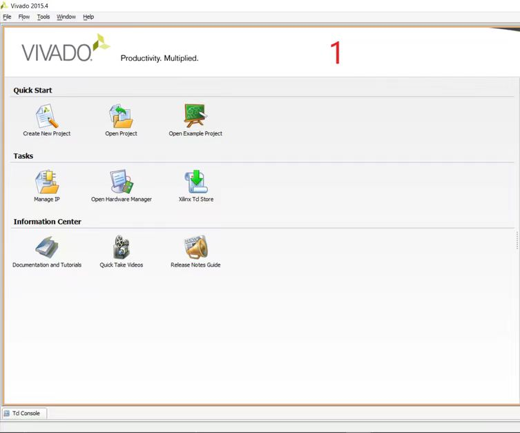 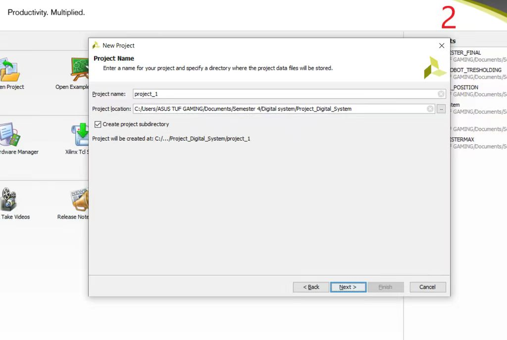 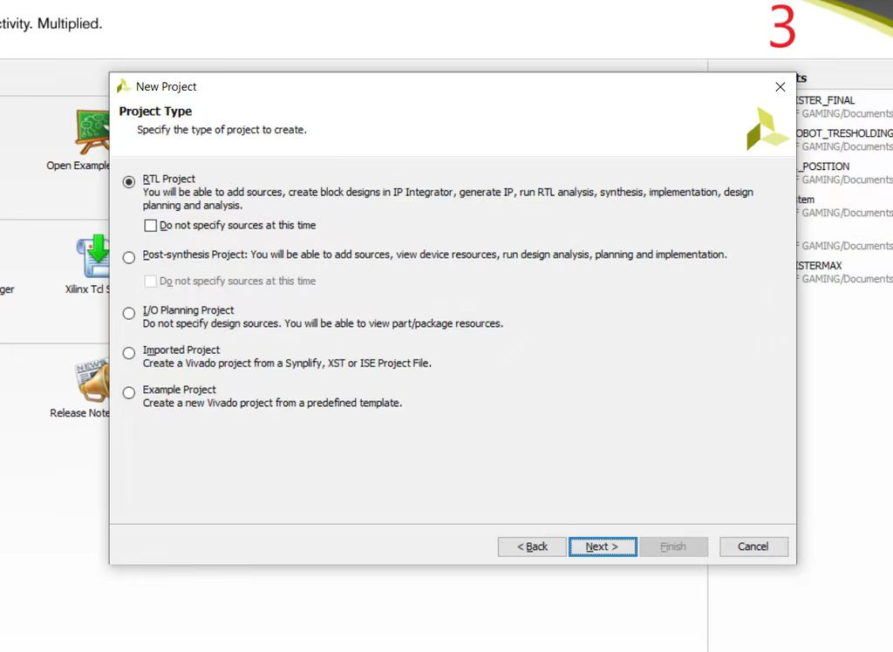 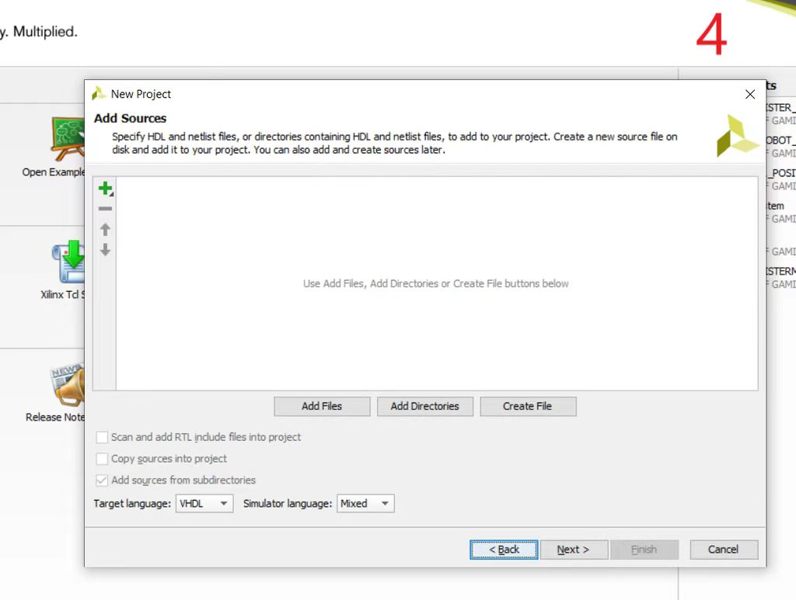 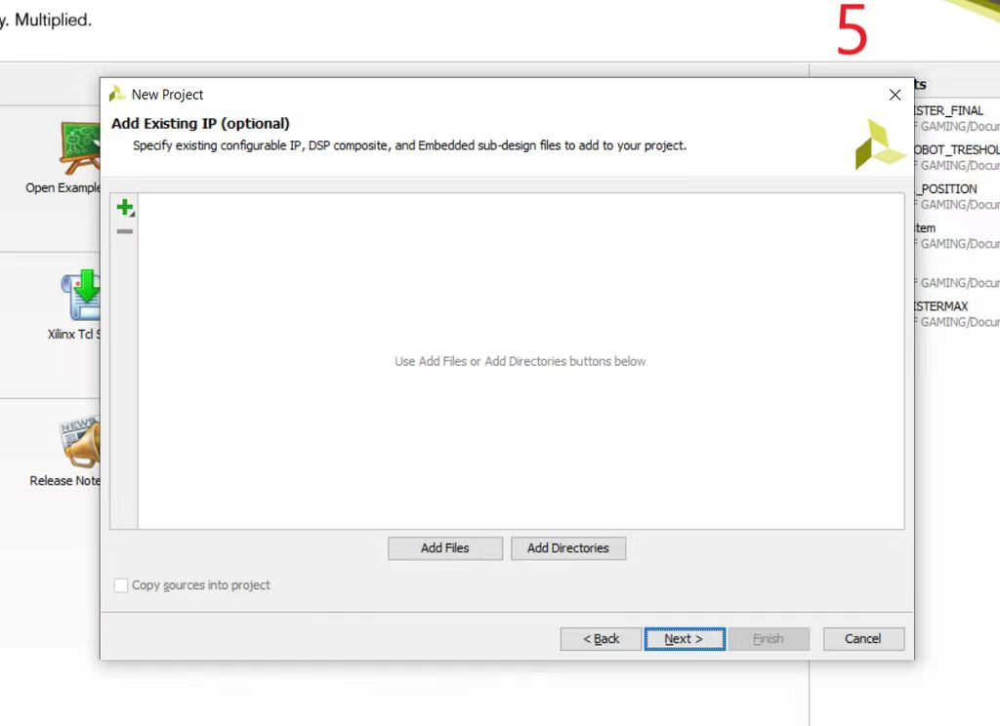 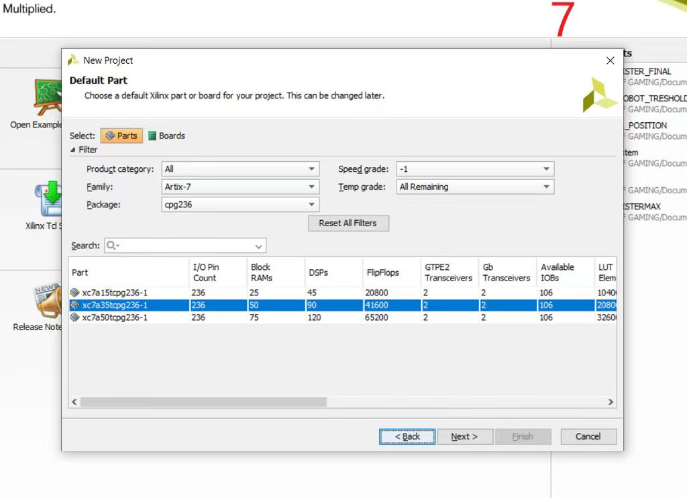
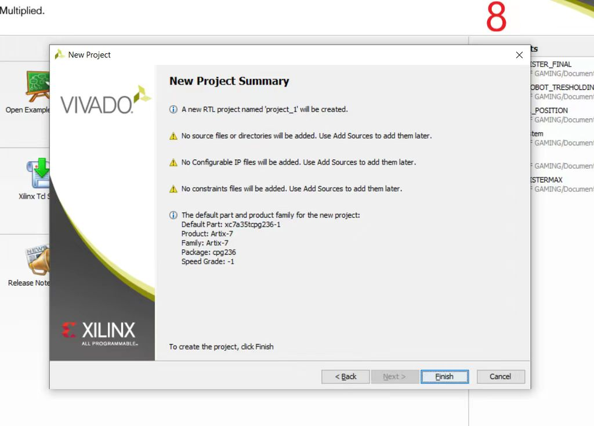
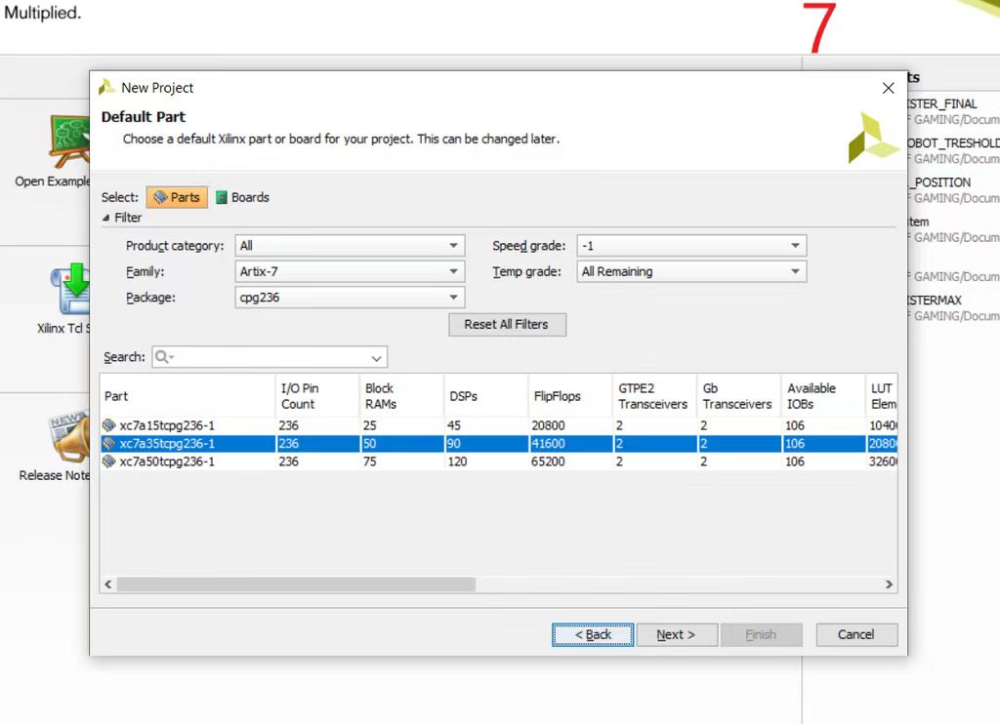
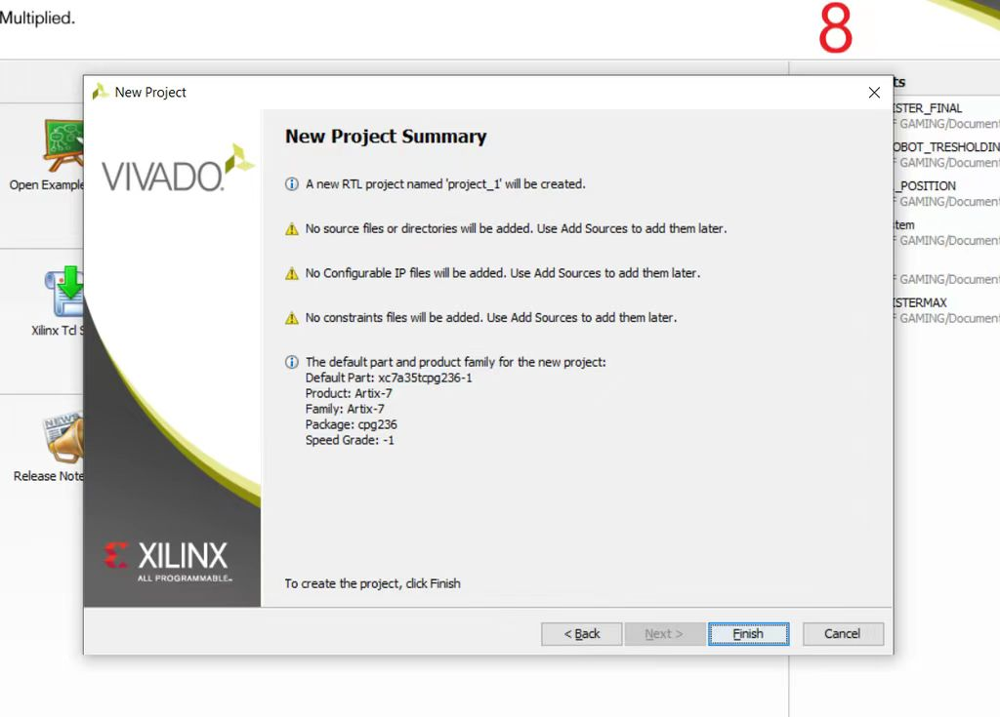
- To create a project in Vivado, you have to Open the Vivado application first. And after that there a few choices will be shown on your screen, as shown in figure 1. And then you choose Create Project. After that, a "Create a New Vivado Project" windows on your screen, then click on "Next >"option.
- After you choose "Next >", the application will ask you to fill the "project name" and "project location" as show in figure 2. After finish filling the project name and project location, click on "Next >".
- Then, the application will ask you to choose the "Project Type"as shown in figure 3. After choosing the "Project Type", click on "Next >".
- The next step is to "Add Sources"to your project as show in figure 4. If you already have the file sources, than choose "Add Files". If you don't have any sources, then choose "Create File". You can choose the "HDL Source For", either "Synthesis & Simulation" or "Simulation Only". On this window, you can also choose the "target language", the options are VHDL and Verilog. Also, you can choose the "simulator language", the options are VHDL, Verilog, and Mixed. After finish adding sources to your project, click on "Next >".
- After that, the application will ask you to "Add Existing IP"as shown in figure 5. This is optional, if you don't want to add IP, just click on "Next >". If you have an existing IP, then choose "Add Files".
- Then, the application will ask you to "Add Constraints" as shown in figure 6. This is optional, if you don't want to add constraints, just click on "Next >". If you have a constraints files, then choose "Add Files".
- The next step, you will be ask to choose the "Default Part" as shown in figure 7. You can choose to select parts or boards. On the "Light Seeking Mobile Robot" project, the "Family" part chosen was "Artix-7". The "Package" chosen was "cpg236". The "Speed grade" chosen was "-1". Then, the "Part" used was "xc7a35tcpg236-1". After you finished choosing, click on "Next >".
- Finally, the last step is the application will show the "New Project Summary" as shown in figure 8. On this window, the "project type" and the "project name" will be shown if you add one. The "source files or directories" will be shown if you add one. The "configurable IP" will also be shown if you add one. The "constraints files" will be shown if you add one too. And the last is the "default part" that you have chosen will also be shown on this window. After that, click "Finish". Once you click "Finish", your new project will be created. And then, you can write you VHDL code there and run "synthesis" after you finish writing your code. Also you can run a simulation by adding a "simulation sources" that consist of the "test bench" code.
After Vivado application have been installed, the steps to create a project in Vivado are as follows:
Step 2: How to Add Source
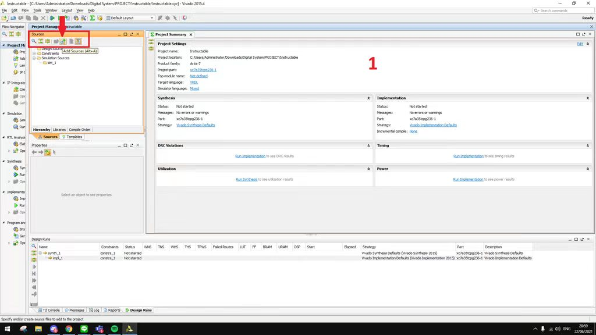 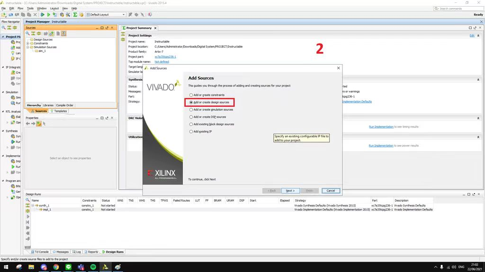 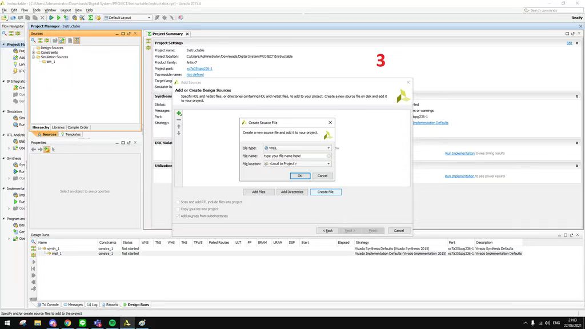 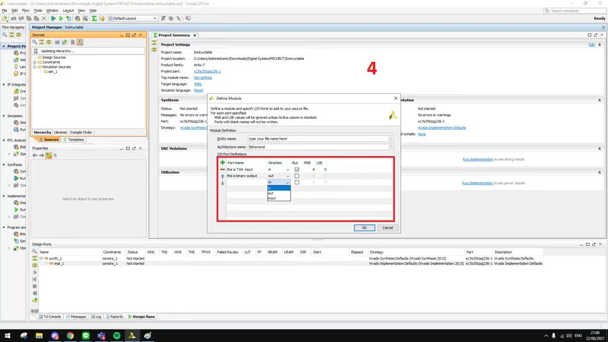 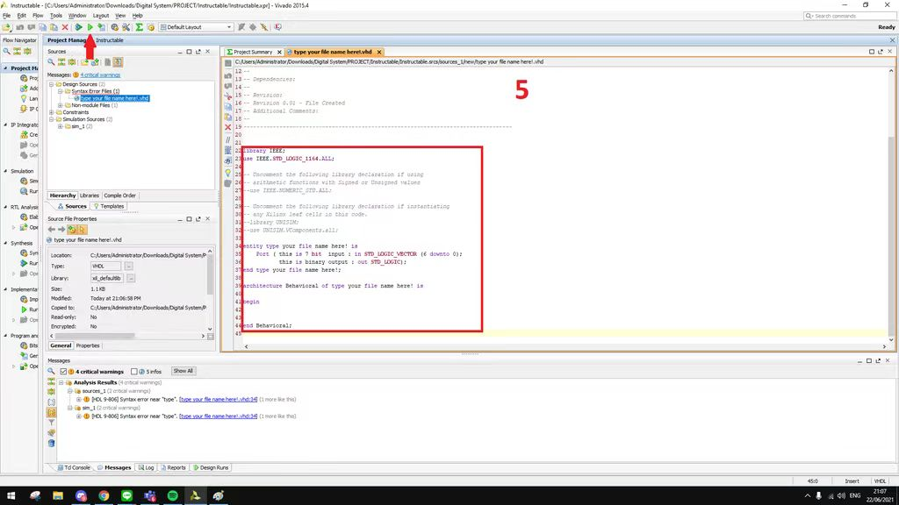- Click "Add Sources" as indicated by the arrow in figure 1.
- The next step select "Add or create design sources" then click "Next>" as shown in figure 2.
- The next step fill "File name" box with the name that you want (should descriptive) then click "OK" as shown in figure 3. Don't forget to make sure that you select "VHDL" on "File type box".
- After you finish to fill "Entity name" with the name that you want (should descriptive) as shown in figure 4.
- Fill the "Port Name" for your source then select "Direction" which either "input" or "output" or "inout" as it should be. Check the "Bus" only if it's more than one bit and fill the "MSB" and "LSB". Just ignore or uncheck if your port only has one bit. For Example Port A has 4 bit (3 downto 0) so 3 for MSB and 0 for LSB.
- MSB : Most Significant Bit
- LSB : Least Significant Bit
- After you finish input all of your port now you can type VHDL code inside the box as show in figure 5. After finish with your code now you can click the "Run
- If there is something wrong with your code, an error warnings will be occurs in box below your code. Don't forget to always learn!
After create a project, the steps to add source in Vivado are as follows :
Step 3: How to Upload to Xc7a35tcpg236-1: USB Method
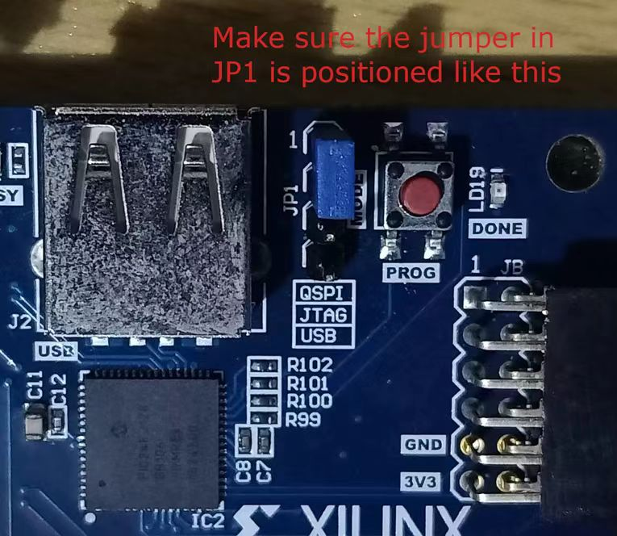
- Make sure the jumper on JP1 is in the USB position. Something looks like first image.
- Plug your USB flash device into your computer.
- Open File Explorer and navigate to the root folder of your Vivado project.
- From root go to root > Project_name.runs > impl_1 and copy the .bit file.
- Go to the root of your USB device and paste the .bit file. The Basys3 on startup will only look through the USB's root for a file with a .bit extension so it is important that the only .bit file in root is the one that you want to be used to program the Basys3.
- Safely remove the USB device from your computer and plug it into the USB port on the Basys 3 board. (Second image)
- Make sure your board is connected to your computer for power and turn on the Basys 3. It should immediately begin writing the .bit file to the FPGA.
Important note that the USB device that you select to program the Basys 3 must be formatted in Fat32. Other than that your device doesn't have to be empty and can contain other files and folders. At this point Vivado is no longer needed to program the FPGA, so you can minimize your project and follow these steps in File Explorer:
Once finished your board should function exactly as it did when programming it with JTAG. Whether you were aware or not you just successfully programmed your Basys3 board two separate ways using the same .bit file.